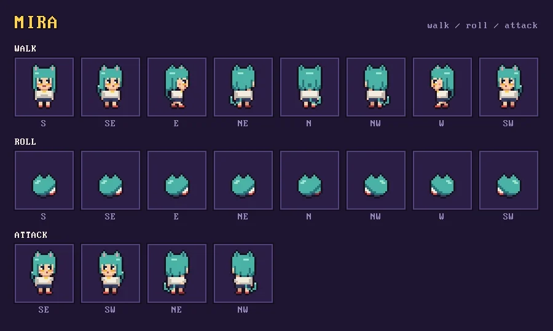
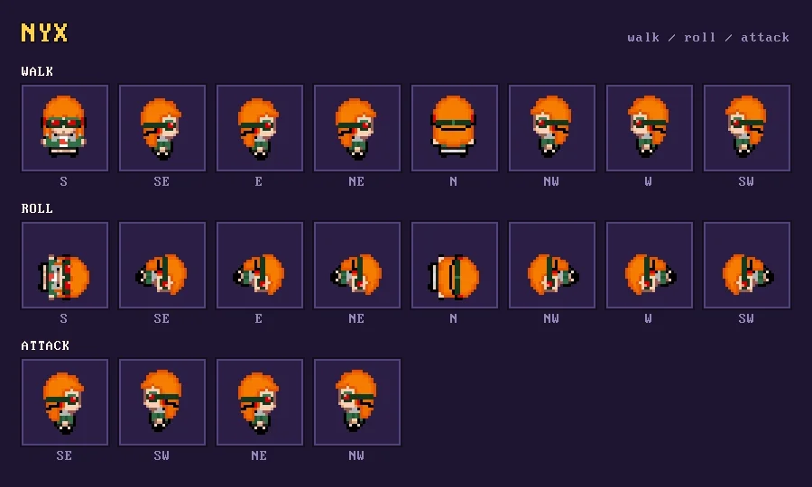
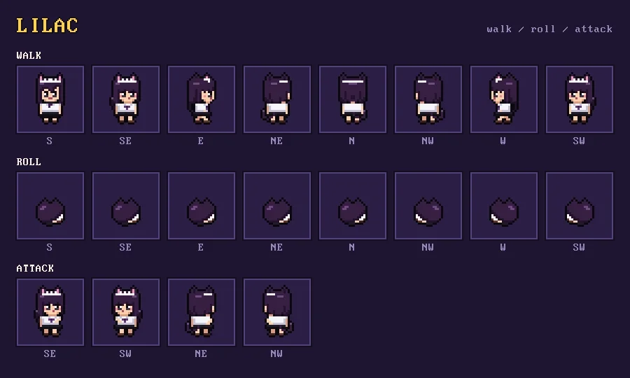
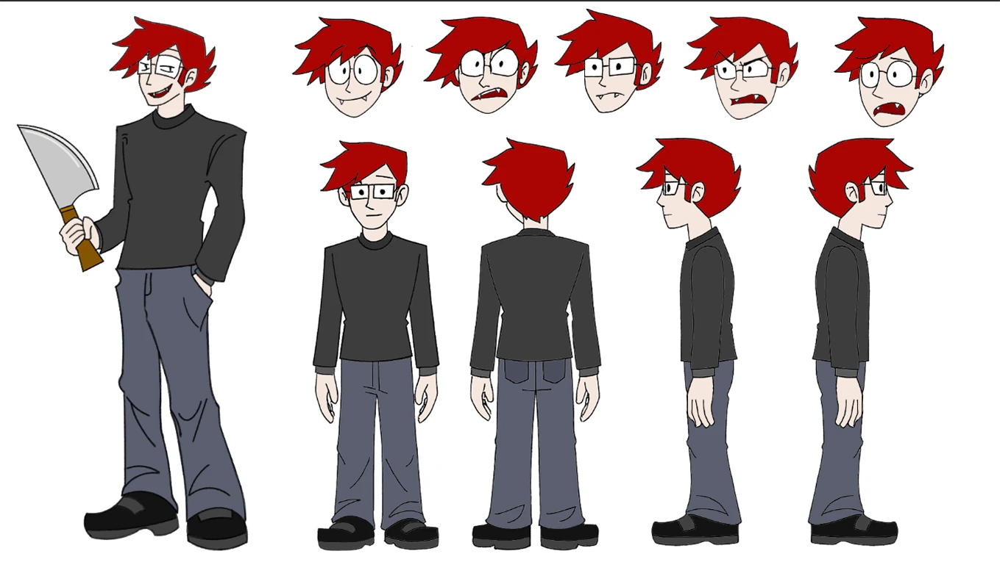
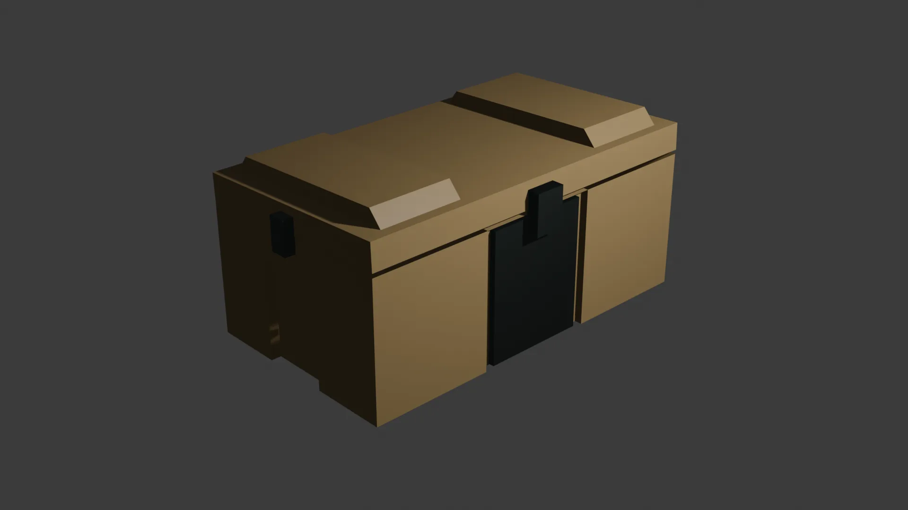
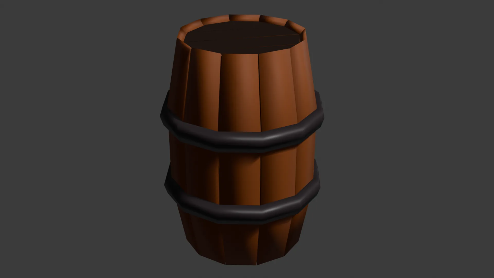

2D character art, sprite sheets and animation from my game and animation projects.
Pixel-art sprite sheet for Mira, one of the three playable heroes in Herding Cats. Mira lobs sticky bombs that blow up whole crowds of slime cats. The sheet covers her walk and roll cycles in all eight directions plus her bomb-throwing attack in four diagonal directions.


Pixel-art sprite sheet for Nyx, one of the three playable heroes in Herding Cats. Nyx sends out a swarm of drones that hack cats and turn them against each other. The sheet covers walk and roll cycles in all eight directions plus a four-direction attack.
Pixel-art sprite sheet for Lilac, a hero made for Herding Cats who didn't make it into the current build. She may show up in a future update. Like the other heroes, the sheet covers walk and roll cycles in eight directions and a four-direction attack.


A custom pixel-art elimination frame created for Sussy Employees. Designed to convey sudden atmospheric dread, this dynamic jumpscare sequence zooms in on the rogue TV-headed character's glowing, unblinking screen as it corner-traps unsuspecting coworkers in dark office corridors. Features custom retro dithering, high-contrast voxel texturing, and expressive low-poly character geometry.
Complete 2D animation character sheet for "The Boss," the central antagonist designed for a 2D animation project. Features a full 360-degree turnaround model breakdown paired with expressive facial emotion keyframes to ensure production consistency across animation pipelines. Designed with sharp, imposing geometry, deliberate linework, and a tailored 1940s-inspired trench coat silhouette that highlights his cold, calculated, and intimidating authority.


Official 2D animation character model sheet for "Bob," the central protagonist of a 2D animated project. Features a complete 360-degree orthographic turnaround paired with dynamic facial expression studies and keyframe pose breakdowns. Designed with vibrant crimson hair, wire-frame glasses, subtle fangs, and plain attire to emphasize his awkward, unassuming silhouette—creating a stark visual contrast against the blood-stained meat cleaver he wields.
Unit and building models for Neon Swarm, my cyberpunk RTS project. Click any slot for a closer look.


3D buildings and street props made for a cyberpunk city scene.
Modular 3D skyscraper model designed for real-time cyberpunk city scenes. Built with clean geometric forms, metallic vent detailing, and custom corporate branding to quickly assemble dense, futuristic urban horizons.


Stylized 3D skyscraper model with a sleek, futuristic design. Features a vertical composition with multiple levels, each with unique architectural elements and lighting effects to create a sense of depth and scale in cyberpunk cityscapes.
High-rise 3D apartment building asset created for a cyberpunk urban environment. Built with modular snapping in mind and detailed with reflective windows, AC props, and urban graffiti decals to add depth and narrative environmental detail to street-level scenes.


Low-poly 3D environmental prop modeled for a cyberpunk city class project. Textured with PBR material maps featuring heavy surface corrosion, rusted industrial green paint, grease stains, and subtle edge wear. Optimized for real-time game engines with an efficient polygon count, perfect for populating atmospheric alleyways, backstreets, and futuristic slum environments.
Low-poly 3D street advertisement kiosk modeled for a cyberpunk city scene. Features an illuminated, glowing display sign showcasing localized corporate branding paired with metallic teal casing, subtle paint scuffs, and edge wear. Designed as a freestanding street-level prop to provide dynamic point-source lighting and ambient atmosphere along urban sidewalks.


Low-poly 3D street bench modeled as an environmental prop for a cyberpunk urban setting. Features heavy dark metallic casing, worn edge textures, sturdy side supports, and a distinct neon blue accent trim inset along the seating frame. Designed for populating sidewalks, public plazas, and transit stations to enhance environmental depth.
A low-poly 3D urban seating asset designed for cyberpunk streetscapes and transit hubs. Constructed with dark wooden/composite slatted backing, a metallic structural frame, and dual neon blue light strips running along the seat edge and footrest bar. Built as a versatile environmental prop to fill out public plazas, walkways, and bus stop shelters.


Futuristic street signage collection designed to guide and restrict flow across high-tech city sectors. Each freestanding sign combines heavy industrial metal posts with glowing digital display faces showing weathered hazard warnings and traffic commands, adding functional world-building detail to sci-fi streetscapes.
Standalone low-poly props.
A stylized low-poly 3D crate/chest prop designed for real-time game environments. Features clean blocky geometry, matte khaki plating, side handles, and a central dark latching mechanism. Built with an optimized poly count, perfect as an interactive loot container, supply drop, or storage clutter for low-poly action and adventure games.


A stylized low-poly 3D wooden barrel environmental prop modeled for real-time game scenes. Features faceted wooden staves in rich brown tones bound by dual dark iron hoops. Optimized with a lightweight polygon footprint, making it an ideal destructible object, resource container, or ambient clutter asset for stylized fantasy, pirate, or medieval environments.